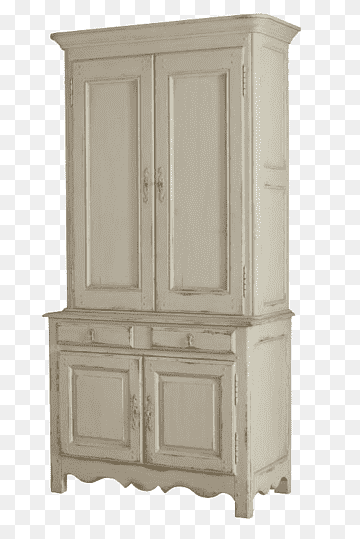

Exotic minimal furniture
Choose from a wide range of well-crafted premium quality wooden furniture online

Bruna Cush
$145.60Drop Type
$265.50

Choose from a wide range of well-crafted premium quality wooden furniture online